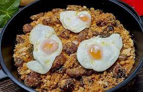

How to do Migas

Migas is a traditional Spanish dish with humble origins that has become a beloved staple in Spanish cuisine. The word "migas" translates to "crumbs" in English,
and the dish is essentially a clever way of using stale bread to create a hearty and flavorful meal.
- bread crumbs
- spanish chorizo
- bacon
- olive oil
- garlic
- green pepper
- red pepper
- eggs
- water
- salt
Instructions
- Heat the olive oil in a large pan over medium heat. Add the garlic and cook for 1 minute.
- Add the bread crumbs and stir to coat in the olive oil. Cook for 5 minutes, stirring occasionally.
- Add the chorizo and bacon to the pan and cook for 5-7 minutes or until browned.
- Add the peppers and cook for 3-4 minutes or until softened.
- Season the migas with salt to taste.
- Push the migas to the sides of the pan and crack the eggs into the center. Cook for 3-4 minutes or until egg whites are set.
- Stir the migas to combine with the eggs. Serve immediately.